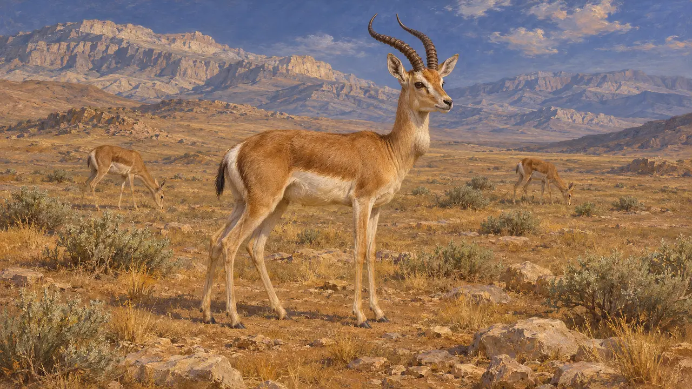
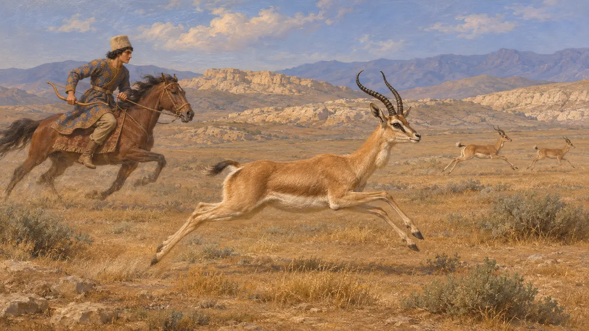
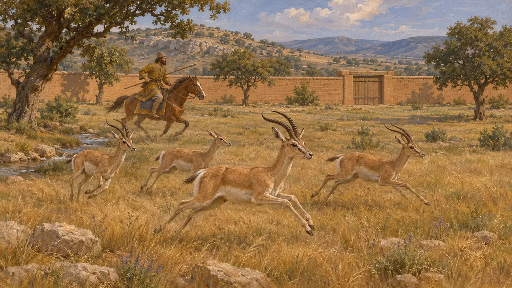
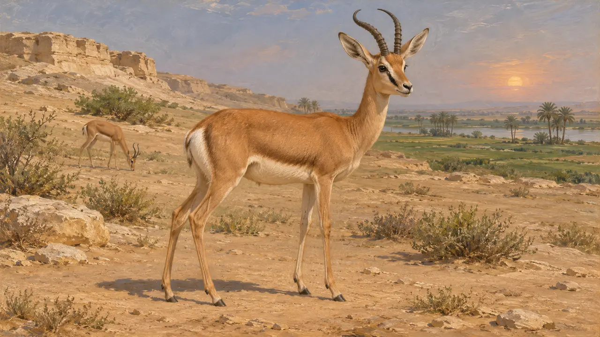

A gazela
Antílope do planalto iraniano e da orla do deserto egípcio, séculos VI-V AEC
No jogo: Nível 1: O Túmulo do Fundador, Nível 2: O Portador da Lança, Nível 3: A Mentira, Nível 4: O Terraço, Nível 5: A Carta
As gazelas eram animais de caça comuns nas terras governadas pelos persas: a gazela-gutural nas estepes do planalto e a gazela-dorcas na borda do deserto do Egito. Os textos persas falam pouco delas, e a maior parte do que se sabe vem de autores gregos que escreveram sobre a caça persa e da arte egípcia. Elas fazem parte da paisagem em que os oficiais do Rei trabalhavam.
No jogo: As gazelas aparecem como fauna nas fases de Pasárgada, Parsa, Bagastana, Susa e Mênfis. São apenas cenário, e nenhuma regra as leva em conta. As colocações nas regiões meda e elamita são interpretação dos desenvolvedores, sem documentação.

Gazelas do planalto
DisputadoA gazela-de-papo é a gazela habitual da estepe e do semideserto do Irã, e o jogo a situa na Pérsis, na Média e em Elam com base nisso. Nenhum texto aquemênida conhecido do autor indica onde viviam determinadas manadas. A distribuição é, portanto, inferida da área posterior do animal e de seu hábitat, não de relatos antigos.
P. Briant, From Cyrus to Alexander, 2002

Gazelas nas caçadas de Xenofonte
Relato antigoXenofonte, escrevendo no século IV, faz o jovem Ciro caçar cervos, gazelas, carneiros selvagens e asnos selvagens na Ciropédia. A obra é um retrato idealizado e em parte filosófico, de modo que não é um registro do que Ciro realmente caçava. Ela mostra, porém, que os gregos do tempo de Xenofonte pensavam nas gazelas como caça persa comum.
Xenophon, Cyropaedia 1.4.7

O parque de caça cercado
Relato antigoXenofonte diz que Ciro, o Jovem, sátrapa na Anatólia, mantinha em Celenas um paradeisos, um parque cercado cheio de animais selvagens, que ele caçava a cavalo. Ele não menciona gazelas ali, de modo que a presença delas nos parques persas é uma suposição razoável, não um fato relatado.
Xenophon, Anabasis 1.2.7

A gazela-dorcas no Egito
DisputadoAs gazelas da borda do deserto aparecem na arte e nas cenas de oferendas egípcias muito antes dos persas, e a gazela-dorcas é a espécie normalmente identificada no vale do Nilo e no deserto próximo. As evidências de que fossem caçadas no período persa são escassas. O uso do animal em Mênfis no jogo apoia-se mais na tradição e no hábitat egípcios do que em textos de 525 AEC.
P. Briant, From Cyrus to Alexander, 2002
Fontes
- Xenophon, Cyropaedia 1.4.7
- Xenophon, Anabasis 1.2.7
- P. Briant, From Cyrus to Alexander, 2002